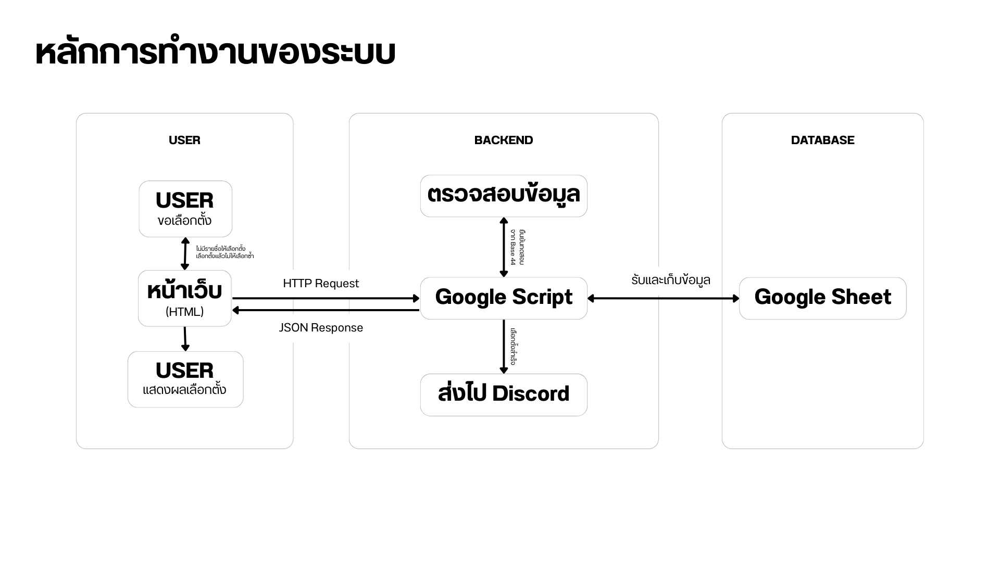

ภาพรวมการทำงาน (System Architecture)
ภาพประกอบหลักการทำงานและโฟลว์การแลกเปลี่ยนข้อมูลระหว่างไคลเอนต์และเซิร์ฟเวอร์:

1. Google Sheets (Database)
มีชีทหลัก 3 แผ่นในการประมวลผลและจัดเก็บข้อมูลอย่างปลอดภัย:
- รายชื่อนักศึกษา: จัดเก็บรหัสผู้มีสิทธิ์ ข้อมูลกลุ่มเรียน และชื่อ-สกุล
- ข้อมูลผู้สมัคร: จัดเก็บรายชื่อ หมายเลข ลิงก์ภาพถ่าย และสังกัดพรรค
- การเลือกตั้ง: บันทึกรายละเอียดการเลือกตั้งของผู้ใช้สิทธิ์และคะแนนโหวต
2. Google Script (Backend API)
ทำหน้าที่เป็น API เซิร์ฟเวอร์รองรับคำขอในรูปแบบ JSON:
checkRights(): ตรวจสอบสิทธิ์เลือกตั้งของนักศึกษาเพื่ออนุญาตการเข้าคูหาgetCandidates(): ดึงข้อมูลหมายเลขและข้อมูลผู้สมัครทั้งหมดsaveVote(): ส่งข้อมูลโหวตบันทึกสถิติและเรียกใช้ Discord WebhookgetResults(): ประมวลผลและส่งยอดนับคะแนนสดแบบเรียลไทม์
3. หน้าเว็บส่วนหน้า (Frontend Features)
การแสดงผลส่วนผู้ใช้งานและคุณสมบัติหลัก:
- Real-time Check: ระบบเปิด-ปิดคูหาเลือกตั้งตามเวลาจริงของเซิร์ฟเวอร์
- Auto Refresh: หน้าแสดงผลนับคะแนนจะดึงข้อมูลใหม่ทุก ๆ 30 วินาที
- Leading Badge: คำนวณผู้มีคะแนนสูงสุดแบบไดนามิกพร้อมเหรียญทองสถานะ
- Progress Bar: แสดงความคืบหน้าของคะแนนเสียงเป็นกราฟแท่งแบบเคลื่อนไหว
4. ระบบจำลองบล็อกเชน (Base 44)
การจำลองระบบป้องกันความถูกต้องของข้อมูล (Data Integrity Simulation):
- Status Indicator: ไฟกะพริบเพื่อระบุสถานะการออนไลน์และระดับการประมวลผลข้อมูล
- Integrity Hash: การเข้ารหัสแบบ SHA เพื่อสร้างรหัสสแตมป์บล็อกประวัติ เปลี่ยนรหัสทุก ๆ 5 วินาที
5. Discord Notifications Webhook
ทุกครั้งที่มีผู้ร่วมลงคะแนนเสร็จสิ้น ระบบหลังบ้านจะเรียกใช้ Webhook เพื่อส่งข้อความรายงานแจ้งเตือนคะแนนเสียงใหม่ในดิสคอร์ดของเจ้าหน้าที่แบบอัตโนมัติ